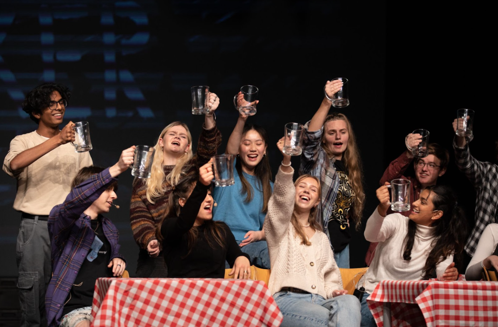

ACT - Climate Change Club
The High School Drama Production is a co-curricular activity which is open to all High School students, and all students are encouraged to be involved in whatever way they are comfortable contributing. Students may choose to be in the cast, or they may choose to be involved behind the scenes in one of several crews: backstage, art, publicity or lighting & sound. Regardless of their experience or interests, students are able to choose the type and level of commitment that works for them and, at the same time, make a vital contribution to the whole. All areas of the production are student-led and offer opportunities for students to develop life skills, including communication skills, collaborative group skills, organizational and self-management skills, critical thinking skills, and problem solving skills, all while having a great time and working with an extended team to create something that is truly their own.
Grades: 9,10,11,12
Time:
For the cast: From August to November – Tuesdays and Thursdays after school; Sundays leading up to the performances; three performances
For the crews: From October to November – Tuesdays and Thursdays after school; one weekend of rehearsals; three performance
Location: Theatre
Supervisors: slandis@isstavanger.no
